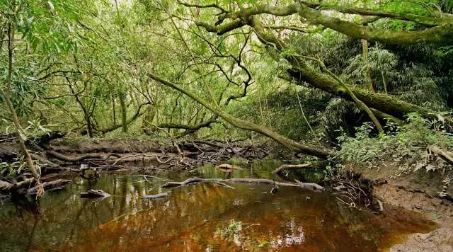
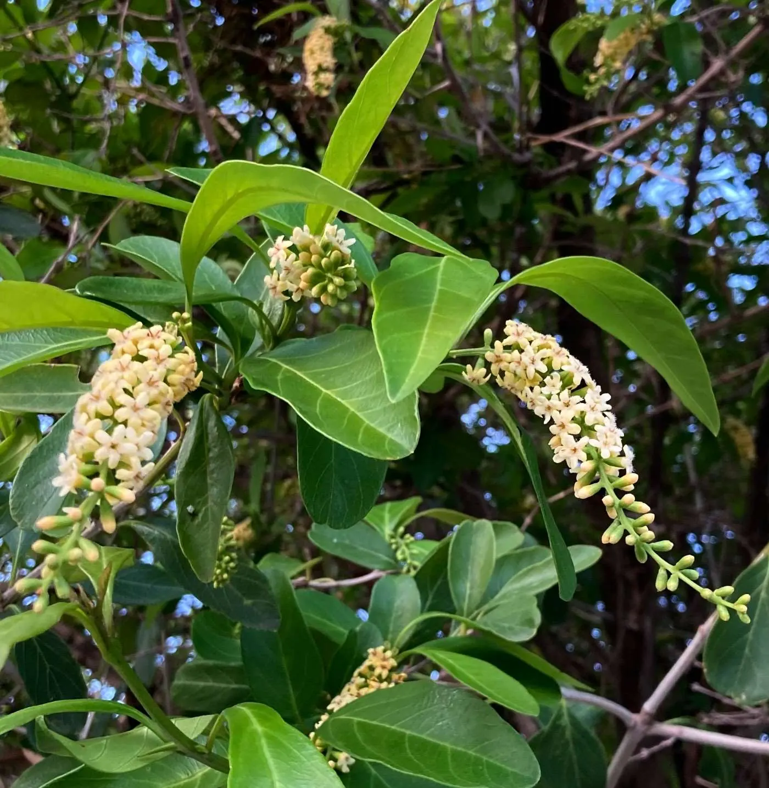

El río que nos nombra
Ensenada es una conversación con el río, y Punta Lara es donde se vuelve más íntima.
Tiene algo que solo tiene Ensenada.
El Tarumá florece y la primera Luna llena de la primavera se posa sobre nuestro río. A ese encuentro le pusimos nombre: Luna Tarumá, nuestra manera de florecer.
Parque Costero de Punta Lara
Primera observación: la Luna en cuarto creciente, el momento en que la Luna crece y el Tarumá empieza a florecer.
Entrada libre y gratuita
Paseo Costero de Punta Lara · Parador 5C (Alte. Brown y 52)
Observación de la Luna llena con telescopios, pintura en vivo, tango, folclore, danza, música en vivo y sabores de la costa.
Entrada libre y gratuita

Ensenada es una conversación con el río, y Punta Lara es donde se vuelve más íntima.

Donde la Luna se refleja respira la Selva Marginal, el bosque subtropical más austral de la Argentina. Nadie la sembró: la trajo el río, semilla a semilla.

De esa selva elegimos una voz: el Tarumá, que florece cada primavera con flores amarillas y perfumadas. Autóctono, ensenadense, floreciendo a la orilla del río.
Buscamos personas que quieran expresar su arte mientras observamos la Luna, con el río y la Luna llena como escenario. Cualquier técnica es bienvenida.
Para sumarte a la noche del 26 de septiembre, escribinos por mensaje directo a @turismoensenada_.


Ilustraciones en plastilina de Mariana Ardanaz.
Organizan: Turismo Ensenada · Facultad de Ciencias Astronómicas y Geofísicas de la UNLP · Nexa Contenidos.
Ilustraciones: Mariana Ardanaz. Aportes: Ing. Forestal Esteban Perea.
Cada rincón invita a bajar el ritmo, conectar con la naturaleza y vivir Ensenada.


Patria, río e industria, uno de los grandes símbolos de la Argentina. Soberanía, trabajo y orgullo nacional.
Gracias al Puerto La Plata por compartir el material.Fuerte Barragán
La Ensenada de Barragán fue puerto natural y punto estratégico en la historia del Río de la Plata. El fuerte conserva una huella central de esa identidad.